Exception Report Checklist - WFC3#
Learning Goals#
In this notebook, you will walk through the procedure for addressing a HST/WFC3 exception report and
determining if a HOPR and/or Help Desk Ticket should be filed.
By the end of this notebook, you will:
Download your data.
Display the data.
Investigate data quality & check for anomalies.
Inspect JIF (jitter/observing log) header keywords for problems.
Determine if a HOPR is warranted.
Table of Contents#
Introduction
1. Imports
2. Download Data
3. View Data
4. Header Keywords from _jif.fits
5. Plotting Data from _jit.fits
5.1 Interpreting the Jitter Plots
6. Further Analysis
6.1 Radial Profile Plots
7. Should I submit a HOPR or Help Desk Ticket?
8. Conclusions
Additional Resources
About this Notebook
Citations
Introduction #
This is a dedicated, stand-alone, notebook to help you look into your HST/WFC3 Exception Report.
HST observations go through a series of automated data quality checks. If a problem is found, an
Exception Report email will be sent to the Principal Investigator (PI). It is then the responsibility of the
PI to assess the data quality and determine whether or not the observations need to be repeated to
accomplish the science goals.
Before starting this notebook, you should have received an Exception Report email from the STScI
Automatic AlertPI Exception Report Generator detailing which of your Exposure IDs were affected.
In this notebook, we provide all the necessary steps for directly downloading your data (including
observing logs i.e. JIF and JIT files), displaying and analyzing it, and determining if a Hubble
Observation Problem Report (HOPR) is warranted.
There is a 90-day time limit from the date that
the data were delivered to file a HOPR. Please keep in mind that when filing a HOPR, you will be
required to show justification as to why the scientific goal(s) will be unattainable. If you run into any
problems trying to use this notebook please contact the WFC3 Help Desk.
Examples of Nominal UVIS and IR Staring Mode Images#

Comparison of Nominal UVIS _flt.fits and _flc.fits Files
#
_flt.fits are calibrated with no CTE correction
#
_flc.fits are calibrated with a CTE correction (UVIS only)#

Note: The above animated GIF is generated from a 500x500 pixel subsection of the full-frame image. For
more information about UVIS CTE please see Chapter 6 of the WFC3 Data Handbook and our WFC3 CTE
Performance Webpage.
1. Imports #
Please make sure you have read the contents of the README.md before continuing the notebook
We import:
Package Name |
Purpose |
|---|---|
|
creating list of files |
|
setting environment variables |
|
direcotry clean up |
|
opening and modifying fits files |
|
downloading data from MAST |
|
creating and manipulating data tables |
|
plotting and displaying images |
|
for displaying any type of WFC3 image |
%matplotlib inline
import glob
import os
import shutil
from astropy.io import fits
from astropy.table import Table
from astroquery.mast import Observations
import matplotlib.pyplot as plt
from docs.display_image import display_image
2. Download Data #
Here, we download the example images via astroquery. For more information, please look at the
documentation for
Astroquery,
Astroquery.mast, and
CAOM Field Descriptions, which is used for the
obs_table variable. Additionally, you may download the data from MAST using either the HST MAST
Search Engine or the more general MAST Portal.
We download _flt.fits images of star cluster NGC-1898 located in the Large Magellanic Cloud,
from GO program 16748 as well as the corresponding _jif.fits and _jit.fits files. After
downloading the images, we move them to a sub-directory within the current working directory. The
data used in this notebook are courteous of PI Dr. Florian Niederhofer.
If you would like to use this notebook to download your own data, edit line 1 in the cell below
with your Exposure ID number from the exception report email. If your data are from WFC3/IR,
you should also download the _ima.fits files by editing the variable file_types on line 4
to include 'IMA' along with the 'FLT', 'JIF','JIT' files. If your data are proprietary,
you may need to take additional steps to download the data with astroquery.
# Edit with exposure ID(s)
exp_ids = ['IEPP01010']
# Specify flle types to download
file_types = ['FLT', 'JIF', 'JIT']
# Loop through exposure id
for obsid in exp_ids:
# make new directory to hold fits files - named by exposure id
newdir = os.path.join(os.getcwd(), obsid.lower())
try:
mkdir = os.mkdir(newdir)
print(f'Making new directory {newdir}')
except FileExistsError:
print(f'Directory {newdir} already exists.')
# Loop through to get FLTs, JIFs, and JITs
for file_type in file_types:
print(f'Working on getting {file_type} files for Exposure ID {obsid}')
obs_table = Observations.query_criteria(obs_id=obsid.lower())
products = Observations.get_product_list(obs_table)
filtered_products = Observations.filter_products(products, productSubGroupDescription=file_type, project='CALWF3')
download_table = Observations.download_products(filtered_products, mrp_only=False)
# For convenience move raws to cwd and remove empty download dir
for file in download_table['Local Path']:
filename = os.path.basename(file)
new_file_path = os.path.join(newdir, filename)
print(f'Moving {file} to {new_file_path}')
os.rename(file, new_file_path)
remove_dir = os.path.join('mastDownload', 'HST', filename[:9])
try:
os.rmdir(remove_dir)
print(f'Removing {remove_dir}')
except (OSError, FileNotFoundError):
print(f'Error removing directory {remove_dir}')
mast_dir = 'mastDownload'
# Check and remove mastDownload directory
if os.path.exists(mast_dir):
print(f'Removing {mast_dir} directory')
shutil.rmtree(mast_dir)
else:
print(f'{mast_dir} does not exist')
Making new directory /home/runner/work/hst_notebooks/hst_notebooks/notebooks/WFC3/exception_report/iepp01010
Working on getting FLT files for Exposure ID IEPP01010
Downloading URL https://mast.stsci.edu/api/v0.1/Download/file?uri=mast:HST/product/iepp01usq_flt.fits to ./mastDownload/HST/iepp01usq/iepp01usq_flt.fits ...
[Done]
Downloading URL https://mast.stsci.edu/api/v0.1/Download/file?uri=mast:HST/product/iepp01utq_flt.fits to ./mastDownload/HST/iepp01utq/iepp01utq_flt.fits ...
[Done]
Downloading URL https://mast.stsci.edu/api/v0.1/Download/file?uri=mast:HST/product/iepp01uvq_flt.fits to ./mastDownload/HST/iepp01uvq/iepp01uvq_flt.fits ...
[Done]
Downloading URL https://mast.stsci.edu/api/v0.1/Download/file?uri=mast:HST/product/iepp01v0q_flt.fits to ./mastDownload/HST/iepp01v0q/iepp01v0q_flt.fits ...
[Done]
Downloading URL https://mast.stsci.edu/api/v0.1/Download/file?uri=mast:HST/product/iepp01veq_flt.fits to ./mastDownload/HST/iepp01veq/iepp01veq_flt.fits ...
[Done]
Downloading URL https://mast.stsci.edu/api/v0.1/Download/file?uri=mast:HST/product/iepp01vgq_flt.fits to ./mastDownload/HST/iepp01vgq/iepp01vgq_flt.fits ...
[Done]
Downloading URL https://mast.stsci.edu/api/v0.1/Download/file?uri=mast:HST/product/iepp01vjq_flt.fits to ./mastDownload/HST/iepp01vjq/iepp01vjq_flt.fits ...
[Done]
Moving ./mastDownload/HST/iepp01usq/iepp01usq_flt.fits to /home/runner/work/hst_notebooks/hst_notebooks/notebooks/WFC3/exception_report/iepp01010/iepp01usq_flt.fits
Removing mastDownload/HST/iepp01usq
Moving ./mastDownload/HST/iepp01utq/iepp01utq_flt.fits to /home/runner/work/hst_notebooks/hst_notebooks/notebooks/WFC3/exception_report/iepp01010/iepp01utq_flt.fits
Removing mastDownload/HST/iepp01utq
Moving ./mastDownload/HST/iepp01uvq/iepp01uvq_flt.fits to /home/runner/work/hst_notebooks/hst_notebooks/notebooks/WFC3/exception_report/iepp01010/iepp01uvq_flt.fits
Removing mastDownload/HST/iepp01uvq
Moving ./mastDownload/HST/iepp01v0q/iepp01v0q_flt.fits to /home/runner/work/hst_notebooks/hst_notebooks/notebooks/WFC3/exception_report/iepp01010/iepp01v0q_flt.fits
Removing mastDownload/HST/iepp01v0q
Moving ./mastDownload/HST/iepp01veq/iepp01veq_flt.fits to /home/runner/work/hst_notebooks/hst_notebooks/notebooks/WFC3/exception_report/iepp01010/iepp01veq_flt.fits
Removing mastDownload/HST/iepp01veq
Moving ./mastDownload/HST/iepp01vgq/iepp01vgq_flt.fits to /home/runner/work/hst_notebooks/hst_notebooks/notebooks/WFC3/exception_report/iepp01010/iepp01vgq_flt.fits
Removing mastDownload/HST/iepp01vgq
Moving ./mastDownload/HST/iepp01vjq/iepp01vjq_flt.fits to /home/runner/work/hst_notebooks/hst_notebooks/notebooks/WFC3/exception_report/iepp01010/iepp01vjq_flt.fits
Removing mastDownload/HST/iepp01vjq
Working on getting JIF files for Exposure ID IEPP01010
Downloading URL https://mast.stsci.edu/api/v0.1/Download/file?uri=mast:HST/product/iepp01010_jif.fits to ./mastDownload/HST/iepp01010/iepp01010_jif.fits ...
[Done]
Moving ./mastDownload/HST/iepp01010/iepp01010_jif.fits to /home/runner/work/hst_notebooks/hst_notebooks/notebooks/WFC3/exception_report/iepp01010/iepp01010_jif.fits
Removing mastDownload/HST/iepp01010
Working on getting JIT files for Exposure ID IEPP01010
Downloading URL https://mast.stsci.edu/api/v0.1/Download/file?uri=mast:HST/product/iepp01010_jit.fits to ./mastDownload/HST/iepp01010/iepp01010_jit.fits ...
[Done]
Moving ./mastDownload/HST/iepp01010/iepp01010_jit.fits to /home/runner/work/hst_notebooks/hst_notebooks/notebooks/WFC3/exception_report/iepp01010/iepp01010_jit.fits
Removing mastDownload/HST/iepp01010
Removing mastDownload directory
3. View Data #
Below we use the imported display_image function to display the data downloaded above. This
function will display the SCI, ERR, and DQ array for any full-frame or subarray WFC3 UVIS or IR image.
See our notebook on displaying and analyzing data for different use cases and functionality. Additionally,
the docstring for the function is available by running the command display_image?. The speed at
which the images are displayed will depend partly on the number of files and their sizes.
While viewing your data and assessing the quality, please keep in mind that the UVIS and IR detectors
both have their own unique anomalies. For a full listing of all known WFC3 anomalies, as well as their
description and example image, please see WFC3 ISR 2017-22. Additionally, there is a WFC3 Anomalies
webpage, which also provides examples as well as linked documentation to various WFC3 Instrument
Science Reports.
Please keep in mind that while the data may look OK to the eye, further analysis into any available PSFs
as well as the S/N and/or flux achieved in the images may be required. For example, this notebook only
shows images from the UVIS detector; if your data are from WFC3/IR please also download the
Intermediate MultiAccum files (_ima.fits). These files contain the full stack of calibrated readouts,
while the final calibrated image (_flt.fits) file is the single image fully processed and trimmed.
For more information about the _ima.fits files see Chapter 3.3 of the WFC3 Data Handbook. To
display each individual read of the _ima.fits file, turn the ima_multiread keyword to True in
the display_image function. If you would like to remove one of the reads from the _ima.fits
files and recalibrate with calwf3 please see our Jupyter Notebook and WFC3 ISR 2016-16 on manual
recalibration.
# Edit fltfiles if you would like to use your own files
fltfiles = sorted(glob.glob(f'{exp_ids[0].lower()}/*flt.fits'))
for f in fltfiles:
display_image(f,
colormaps=['Greys_r', 'Greys_r', 'inferno_r'],
scaling=[(-10, 130), (None, None), (None, None)],
printmeta=True,
ima_multiread=False,
figsize=(16, 16),
dpi=150)
WFC3/UVIS iepp01usq_flt.fits
--------------------------------------------
Filter = F814W, Date-Obs = 2022-02-24 T22:29:10,
Target = NGC-1898, Exptime = 40.0, Subarray = False, Units = ELECTRONS
WFC3/UVIS iepp01utq_flt.fits
--------------------------------------------
Filter = F814W, Date-Obs = 2022-02-24 T22:32:11,
Target = NGC-1898, Exptime = 447.0, Subarray = False, Units = ELECTRONS
WFC3/UVIS iepp01uvq_flt.fits
--------------------------------------------
Filter = F814W, Date-Obs = 2022-02-24 T23:27:52,
Target = NGC-1898, Exptime = 447.0, Subarray = False, Units = ELECTRONS
WFC3/UVIS iepp01v0q_flt.fits
--------------------------------------------
Filter = F814W, Date-Obs = 2022-02-25 T00:09:24,
Target = NGC-1898, Exptime = 446.0, Subarray = False, Units = ELECTRONS
WFC3/UVIS iepp01veq_flt.fits
--------------------------------------------
Filter = F814W, Date-Obs = 2022-02-25 T01:03:05,
Target = NGC-1898, Exptime = 446.0, Subarray = False, Units = ELECTRONS
WFC3/UVIS iepp01vgq_flt.fits
--------------------------------------------
Filter = F814W, Date-Obs = 2022-02-25 T01:12:39,
Target = NGC-1898, Exptime = 446.0, Subarray = False, Units = ELECTRONS
WFC3/UVIS iepp01vjq_flt.fits
--------------------------------------------
Filter = F814W, Date-Obs = 2022-02-25 T01:48:45,
Target = NGC-1898, Exptime = 40.0, Subarray = False, Units = ELECTRONS
 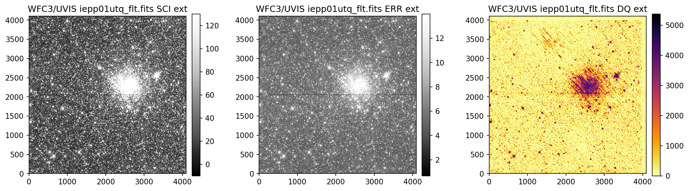
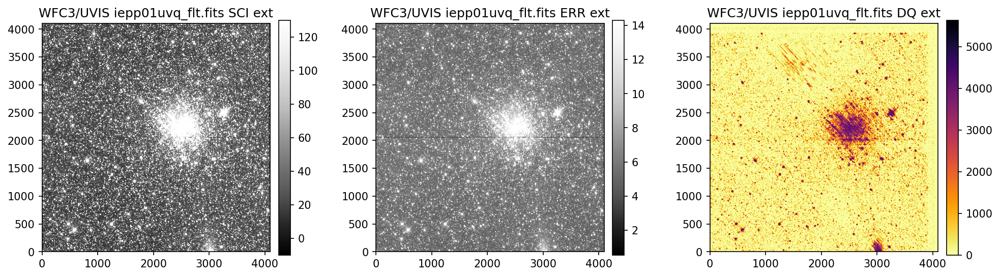
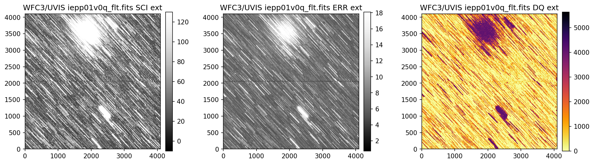
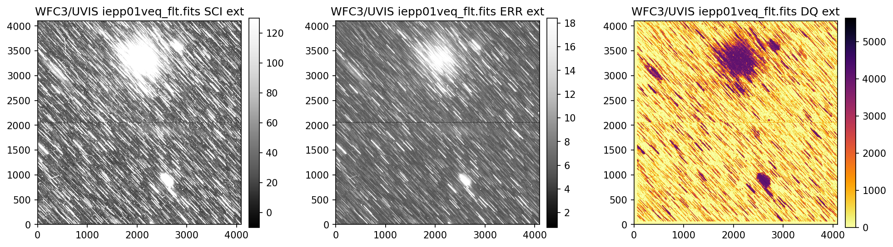
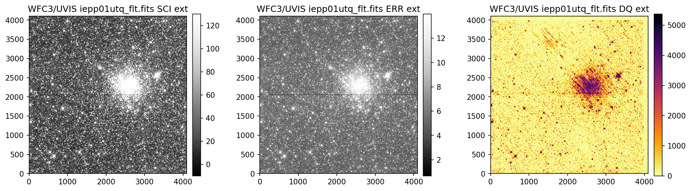
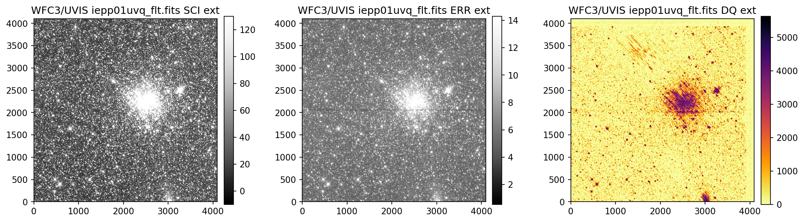
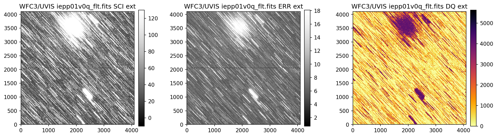
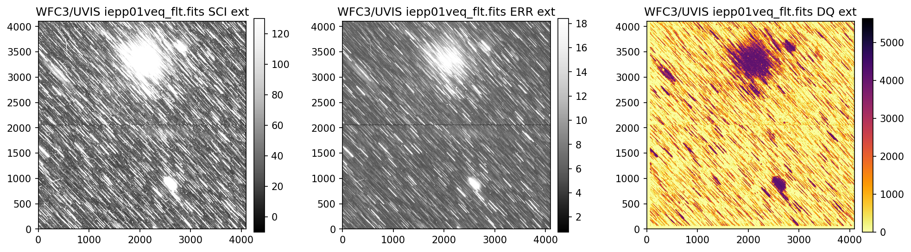
 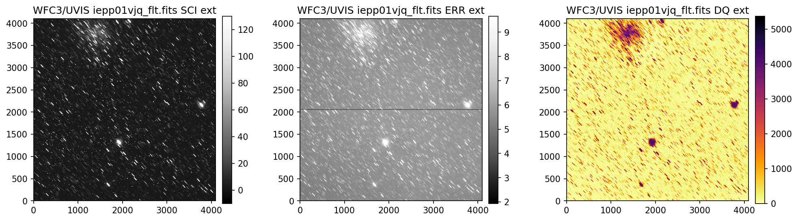
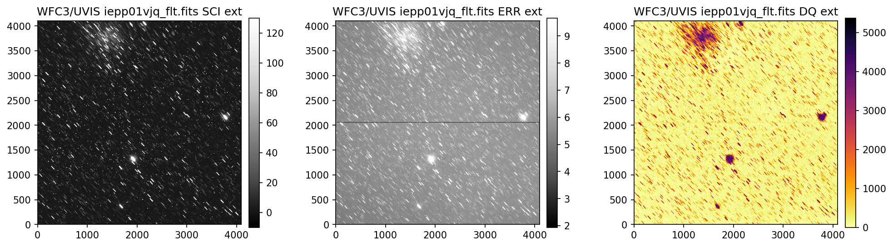
4. Header Keywords from _jif.fits#
In the example above, we can see that the telescope guiding failed in at least 4 of the 7 images
from dataset IEPP01010. Since this is not a SNAP program (which does not get repeat observations
per STScI policy) there is already enough evidence to file a HOPR and request that the exposures
get repeated.
But, if you are still unsure if the data were affected, the next step is to look at the header keywords
The jitter files _jif.fits, also known as observing logs, record a lot of information including
Jitter, Pointing Control System data, World Coordinate System parameters, and spacecraft data
taken during the observations.
One of the sections in the header of the jitter file is called “Problem Flags and Warnings” where
a majority of the keywords will help assess if there were problems with guide star lock and tracking.
If you would like to use your own _jif.fits file please edit line 1 in the cell below. The indexing
on line 2 may also need to be modified.
# Edit with the path to your own _jif.fits file
jif_file = f'{exp_ids[0].lower()}/{exp_ids[0].lower()}_jif.fits'
fits.getheader(jif_file, 0)[-21:-6]
/ PROBLEM FLAGS and WARNINGS
T_GDACT = F / Actual guiding mode same for all exposures
T_ACTGSP= F / Actual Guide Star Separation same in all exps.
T_GSFAIL= T / Guide star acquisition failure in any exposure
T_SGSTAR= F / Failed to single star fine lock
T_TLMPRB= F / problem with the engineering telemetry in any e
T_NOTLM = F / no engineering telemetry available in all exps.
T_NTMGAP= 0 / total number of telemetry gaps in association
T_TMGAP = 0.000000 / total duration of missing telemetry in asn. (s)
T_GSGAP = F / missing telemetry during GS acq. in any exp.
T_SLEWNG= F / Slewing occurred during observations
T_TDFDWN= T / Take Data Flag NOT on throughout observations
Specifically from the keywords above, T_GSFAIL indicates one or more exposures had a guide
star acquisition failure.
fits.getheader(jif_file, 0)['T_GSFAIL*']
T_GSFAIL= T / Guide star acquisition failure in any exposure
Next, we loop through each extension of the _jif.fits file, and display various keywords that help
identify which exposures were affected. In the _jif.fits files, each extension number corresponds
to a given science exposure through the header keyword EXPNAME. In this example, the most relevant
keywords that show something went wrong are GUIDEACT, GSACQ, GSFAIL, as well as V2_RMS
and V3_RMS.
numexts = fits.getheader(jif_file, 0)['NEXTEND'] # number of extensions i.e. exposures
keywords = ['EXPNAME*', 'GUIDEACT*', 'GSACQ*', 'ACTGSSEP*',
'GSSEPRMS*', ' NLOSSES*', 'CRVAL1*', 'CRVAL2*',
'V2_RMS*', 'V3_RMS*', 'GSFAIL*']
for ext in range(1, numexts+1):
print("JIF Header Ext Number:", ext)
print('-'*80)
header = fits.getheader(jif_file, ext)
for keyword in keywords:
# try to display keyword because it may not be present
details = header.get(keyword)
if details is not None:
print(f'{details}')
else:
print(f'Keyword {keyword} not found in extension {ext}')
print('\n')
JIF Header Ext Number: 1
--------------------------------------------------------------------------------
EXPNAME = 'iepp01usj ' / exposure identifier END
GUIDEACT= 'FINE LOCK ' / Actual Guiding mode at end of GS acquisition END
GSACQ = '2022.055:22:25:39 ' / Actual time of GS Acquisition Completion END
ACTGSSEP= 1059.807 / Actual Guide Star Separation (arcsec) END
GSSEPRMS= 0.3 / RMS of Guide Star Separation (milli-arcsec) END
END
CRVAL1 = 79.1905627 / first axis value at reference pixel END
CRVAL2 = -69.6534228 / second axis value at reference pixel END
V2_RMS = 2.1 / dominant guide star V2 axis RMS (mas) END
V3_RMS = 1.5 / dominant guide star V3 axis RMS (mas) END
END
JIF Header Ext Number: 2
--------------------------------------------------------------------------------
EXPNAME = 'iepp01utj ' / exposure identifier END
GUIDEACT= 'FINE LOCK ' / Actual Guiding mode at end of GS acquisition END
GSACQ = '2022.055:22:25:39 ' / Actual time of GS Acquisition Completion END
ACTGSSEP= 1059.807 / Actual Guide Star Separation (arcsec) END
GSSEPRMS= 0.4 / RMS of Guide Star Separation (milli-arcsec) END
END
CRVAL1 = 79.1905622 / first axis value at reference pixel END
CRVAL2 = -69.6534226 / second axis value at reference pixel END
V2_RMS = 2.0 / dominant guide star V2 axis RMS (mas) END
V3_RMS = 1.5 / dominant guide star V3 axis RMS (mas) END
END
JIF Header Ext Number: 3
--------------------------------------------------------------------------------
EXPNAME = 'iepp01uvj ' / exposure identifier END
GUIDEACT= 'FINE LOCK ' / Actual Guiding mode at end of GS acquisition END
GSACQ = '2022.055:23:25:02 ' / Actual time of GS Acquisition Completion END
ACTGSSEP= 1059.803 / Actual Guide Star Separation (arcsec) END
GSSEPRMS= 0.5 / RMS of Guide Star Separation (milli-arcsec) END
END
CRVAL1 = 79.1878796 / first axis value at reference pixel END
CRVAL2 = -69.6537303 / second axis value at reference pixel END
V2_RMS = 2.0 / dominant guide star V2 axis RMS (mas) END
V3_RMS = 1.5 / dominant guide star V3 axis RMS (mas) END
END
JIF Header Ext Number: 4
--------------------------------------------------------------------------------
EXPNAME = 'iepp01v0j ' / exposure identifier END
GUIDEACT= 'GYRO ' / Actual Guiding mode at end of GS acquisition END
GSACQ = ' ' / Actual time of GS Acquisition Completion END
ACTGSSEP= -32767. / Actual Guide Star Separation (arcsec) END
GSSEPRMS= -32767. / RMS of Guide Star Separation (milli-arcsec) END
END
CRVAL1 = -32767. / first axis value at reference pixel END
CRVAL2 = -32767. / second axis value at reference pixel END
V2_RMS = -32767. / dominant guide star V2 axis RMS (mas) END
V3_RMS = -32767. / dominant guide star V3 axis RMS (mas) END
GSFAIL = 'NOLOCK ' / Guide star acquisition failure END
JIF Header Ext Number: 5
--------------------------------------------------------------------------------
EXPNAME = 'iepp01vej ' / exposure identifier END
GUIDEACT= 'GYRO ' / Actual Guiding mode at end of GS acquisition END
GSACQ = ' ' / Actual time of GS Acquisition Completion END
ACTGSSEP= -32767. / Actual Guide Star Separation (arcsec) END
GSSEPRMS= -32767. / RMS of Guide Star Separation (milli-arcsec) END
END
CRVAL1 = -32767. / first axis value at reference pixel END
CRVAL2 = -32767. / second axis value at reference pixel END
V2_RMS = -32767. / dominant guide star V2 axis RMS (mas) END
V3_RMS = -32767. / dominant guide star V3 axis RMS (mas) END
GSFAIL = 'NOLOCK ' / Guide star acquisition failure END
JIF Header Ext Number: 6
--------------------------------------------------------------------------------
EXPNAME = 'iepp01vgj ' / exposure identifier END
GUIDEACT= 'GYRO ' / Actual Guiding mode at end of GS acquisition END
GSACQ = ' ' / Actual time of GS Acquisition Completion END
ACTGSSEP= -32767. / Actual Guide Star Separation (arcsec) END
GSSEPRMS= -32767. / RMS of Guide Star Separation (milli-arcsec) END
END
CRVAL1 = -32767. / first axis value at reference pixel END
CRVAL2 = -32767. / second axis value at reference pixel END
V2_RMS = -32767. / dominant guide star V2 axis RMS (mas) END
V3_RMS = -32767. / dominant guide star V3 axis RMS (mas) END
GSFAIL = 'NOLOCK ' / Guide star acquisition failure END
JIF Header Ext Number: 7
--------------------------------------------------------------------------------
EXPNAME = 'iepp01vjj ' / exposure identifier END
GUIDEACT= 'GYRO ' / Actual Guiding mode at end of GS acquisition END
GSACQ = ' ' / Actual time of GS Acquisition Completion END
ACTGSSEP= -32767. / Actual Guide Star Separation (arcsec) END
GSSEPRMS= -32767. / RMS of Guide Star Separation (milli-arcsec) END
END
CRVAL1 = -32767. / first axis value at reference pixel END
CRVAL2 = -32767. / second axis value at reference pixel END
V2_RMS = -32767. / dominant guide star V2 axis RMS (mas) END
V3_RMS = -32767. / dominant guide star V3 axis RMS (mas) END
GSFAIL = 'NOLOCK ' / Guide star acquisition failure END
Above, we see that the _jif.fits file is reporting that exposures 4 through 7 failed to acquire a
guide star. In extensions 4-7, the GSACQ keyword is blank, GSFAIL is set to NOLOCK, and the
values for GSSEPRMS, V2_RMS, V3_RMS are nonphysical at -32767 mas.
5. Plotting Data from _jit.fits#
Next, we will use the data inside of the _jit.fits file to make plots of the jitter for each individual
exposure. Specifically, we plot the V2 and V3 average jitter (over 3 seconds) as well as the V2 and V3
jitter RMS. The HST-based, or vehicle (V2, V3) system is an orthogonal reference frame tied to the
telescope and is used operationally for alignment, pointing, and slewing purposes (V2 = -U2 and V3
= –U3). For more information about the coordinate systems, and UVIS and IR field geometries see the
WFC3 Instrument Handbook Chapter 6.4 and Chapter 7.4 respectively. A description of each column,
as well as the corresponding unit, can be found in the headers of the JIT file.
If you would like to use your own _jit.fits file please edit line 1 in the cell below. Additionally,
if you need to change the figure size and/or resolution please edit lines 4 and/or 5.
jit_file = f'{exp_ids[0].lower()}/{exp_ids[0].lower()}_jit.fits' # Edit with the path to your own _jit.fits file
numexts = fits.getheader(jit_file, 0)['NEXTEND'] # number of extensions i.e. exposures
figure_size = (7, 5) # Edit if you want to chage the figure size
dotsperinch = 115 # Edit if you want to change the figure resolution
for ext in range(1, numexts+1):
jit_tbl = Table(fits.getdata(jit_file, ext))
expname = fits.getheader(jit_file, ext)['EXPNAME']
flt_file = glob.glob(f"{exp_ids[0].lower()}/{expname[:8]}*flt.fits")
plt.figure(figsize=figure_size, dpi=dotsperinch)
plt.grid(alpha=0.5)
plt.scatter(jit_tbl['Seconds'], jit_tbl['SI_V2_AVG'], 15, alpha=.5, marker='o', label='V2_AVG')
plt.scatter(jit_tbl['Seconds'], jit_tbl['SI_V3_AVG'], 15, alpha=.5, marker='o', label='V3_AVG')
plt.scatter(jit_tbl['Seconds'], jit_tbl['SI_V2_RMS'], 10, alpha=.5, marker='s', label='V2_RMS')
plt.scatter(jit_tbl['Seconds'], jit_tbl['SI_V3_RMS'], 10, alpha=.5, marker='s', label='V3_RMS')
plt.xlabel('Exposure Time [Seconds]', size=13)
plt.ylabel('Coordinate Axis [Arcsec]', size=13)
plt.title(f"Jitter File Ext Number: {ext}\n Corresponding FLT: {flt_file[0].split('/')[-1]}", size=14)
plt.legend(prop={'size': 12}, ncol=2)
plt.minorticks_on()
5.1 Interpreting the Jitter Plots#
In the plots above, there is more confirmation that exposures 4-7 failed to acquire a guide star. Every
value in the V2 & V3 average and RMS columns inside of the _jit.fits file for those exposures
are reporting an erroneous value of 1.6 x 1038. However, rather than having every value set to 1.6 x 1038,
exposures 1-3 above have real jitter data reported. In this example, the average V2 & V3 jitter values
vary by about +/- 0.5 - 2 mas and the RMS values are at a 1.5 - 2 mas level.
The HST Primer section on Optical Performance, Guiding
Performance, and Observing Efficiency for Cycle 32 states the dual guide star “pointing control method was
designed to keep telescope jitter below 0.007 arcsec rms, but the current performance has jitter of
0.008 arcsec rms.” If the exposure had single guide star tracking, the Primer section explains that “a
gyro drift around the guide star will be present that can be as large as 17 milliarcsec (mas) of roll
angle per second.”
6. Further Analysis#
While we have determined that four of the exposures failed in this example, further analysis may be
needed to access your data quality.
If you are still unsure whether or not your data quality was affected (such as in exposures 1-3 above),
we kindly ask that you complete a couple more verification steps:
Determine whether the signal-to-noise and/or flux of your data reached the expected levels
Analyze any point spread functions or sources that appear in your exposures for signs of drifting
For analyzing the S/N and/or flux in your image using Python, we recommend the Astropy package for
photometry, photutils, and imexam. Some of the methods offered by photutils are source detection,
aperture photometry, and PSF photometry. The imexam method offers many useful diagnostic plots
such as radial profile, curve of growth, and contours. For more information about WFC3 PSF analysis
please see our PSF data analysis webpage.
6.1 Radial Profile Plots#
Below, we show an example of searching for sources with photutils.detection.DAOStarFinder
in a 100x100 pixel subsection and subsequently plotting their radial profiles using the RadialProfile
class within the file rad_prof.py.
We also import:
Package Name |
Purpose |
|---|---|
|
handling arrays |
|
sigma clipping statistics |
|
z-scaling images |
|
logarithmic normalization |
|
aperture photometry |
|
point source detection |
|
generating radial profiles |
from astropy.stats import sigma_clipped_stats
from astropy.visualization import ZScaleInterval
from matplotlib.colors import LogNorm
import numpy as np
from photutils.aperture import CircularAperture
from photutils.detection import DAOStarFinder
from docs.rad_prof import RadialProfile
First, we open the data and 3 sigma clip it to get the median and standard deviation values. We then use
those values to help search for sources using photutils.detection.DAOStarFinder. We truncate
the list of sources to those with flux > 10 and well within the x & y border of the 100x100 pixel
subsection. Lastly, we create photutils.aperture objects so we can easily display the subsection
with each source marked.
# Read in data
filename = 'iepp01010/iepp01uvq_flt.fits'
uvis2 = fits.getdata(filename, 'SCI', 1)
header = fits.getheader(filename)
# Trim data to 100x100 subsection
data = uvis2[:100, 65:165]
# 3 sigma clip data to get median and std values
mean, median, std = sigma_clipped_stats(data, sigma=3.0)
# Search for sources
daofind = DAOStarFinder(fwhm=2.5, threshold=3*std)
sources = daofind(data - median)
# Truncate list to show just a few sources
sources = sources[(sources['flux'] > 10) &
(sources['xcentroid'] > 10) & (sources['xcentroid'] < 90) &
(sources['ycentroid'] > 18) & (sources['ycentroid'] < 90)]
# Create circular apertures to plot
positions = np.transpose((sources['xcentroid'], sources['ycentroid']))
apertures = CircularAperture(positions, r=5.)
# Get zscale image min and max limits
z = ZScaleInterval()
z1, z2 = z.get_limits(data)
# Plot 100x100 subsection and apertures
plt.figure(figsize=(15, 10))
im1 = plt.imshow(data-z1+.01, origin='lower', cmap='Greys', norm=LogNorm(vmin=.01, vmax=z2*100.-z1))
apertures.plot(color='red', lw=1.5, alpha=0.5)
plt.title(filename, size=14)
plt.colorbar(im1, pad=0.01)
<matplotlib.colorbar.Colorbar at 0x7fd1fc5c3790>
Now that we have the x & y coordinates for several (12) sources in the image, we loop through each one and
calculate and display the radial profile, which provides the measured FWHM value in the legend of the plot.
For more information about UVIS and IR optical performance, such as nominal PSF FWHM values, please
see WFC3 Instrument Handbook Chapters 6.6 and 7.6 respectively.
# Loop through sources and plot star stamp next to corresponding radial profile plot
for xy in zip(sources['xcentroid'], sources['ycentroid']):
fig, [ax1, ax2] = plt.subplots(1, 2, figsize=(11, 5))
# Calculate radial profile and plot on ax2
my_prof = RadialProfile(xy[0], xy[1], data,
r=5,
fit=True,
recenter=True,
show=True,
ax=ax2)
# Create boundaries for stamp
x1 = int(round(my_prof.x-7))
x2 = int(round(my_prof.x+7))
y1 = int(round(my_prof.y-7))
y2 = int(round(my_prof.y+7))
# Plot star stamp
im1 = ax1.imshow(data[y1:y2, x1:x2]-z1+.01, origin='lower', cmap='Greys', extent=[x1, x2, y1, y2], norm=LogNorm(vmin=.01, vmax=z2*100.-z1))
ax1.set_title(f"x = {my_prof.x:.3f}, y = {my_prof.y:.3f}", size=13)
ax2.set_title(header['filter'], size=13)
ax2.grid(alpha=0.5)
fig.tight_layout()
WARNING: The fit may be unsuccessful; check fit_info['message'] for more information. [astropy.modeling.fitting]

 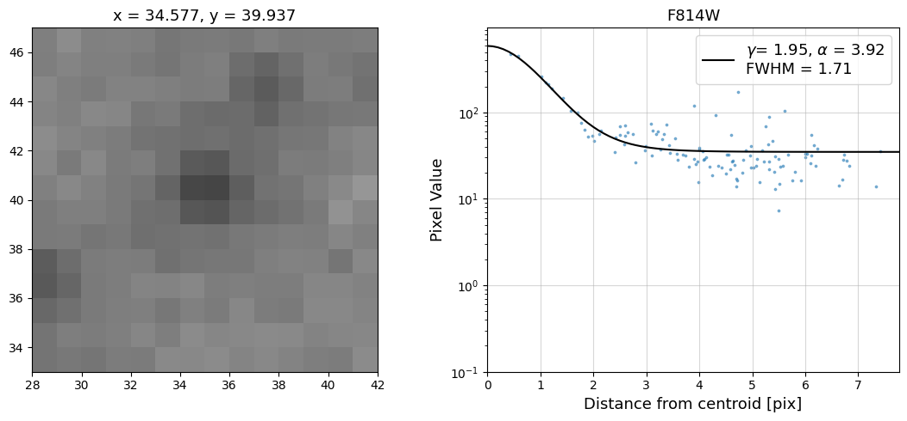
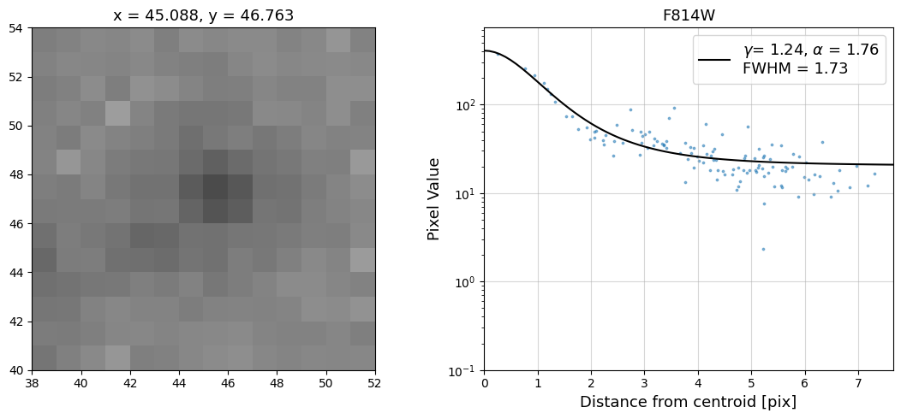
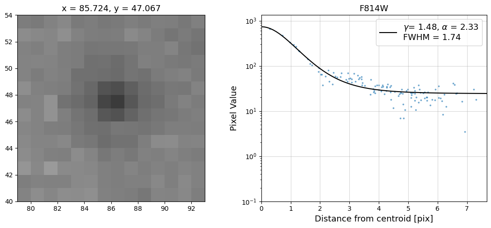
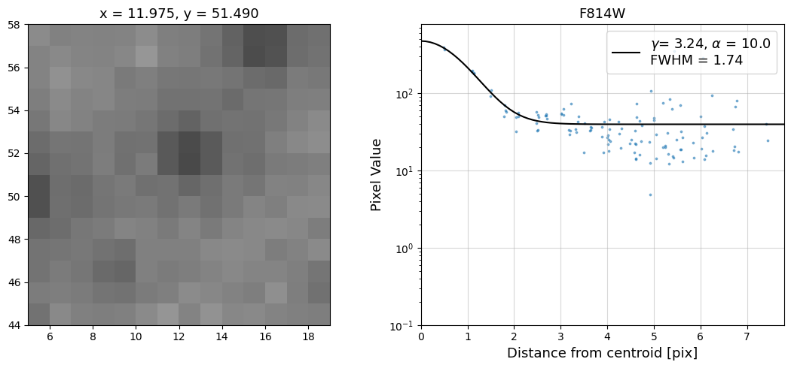
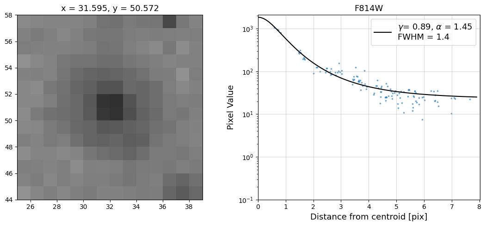
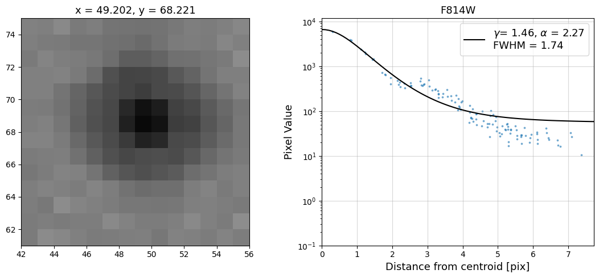
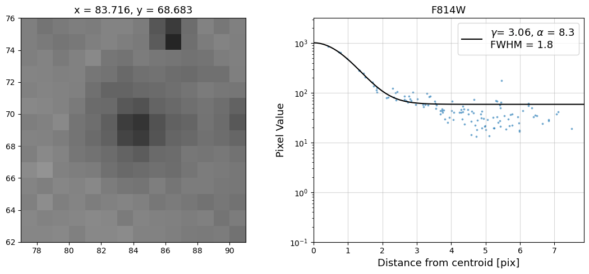
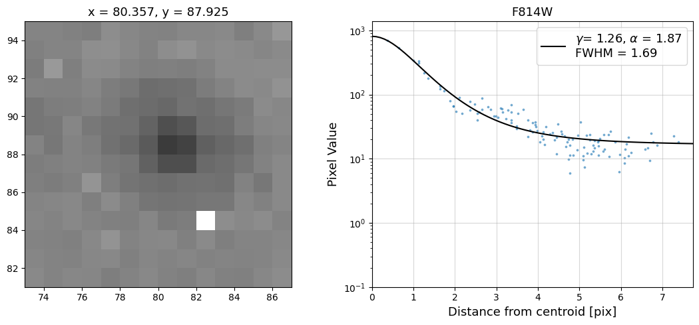
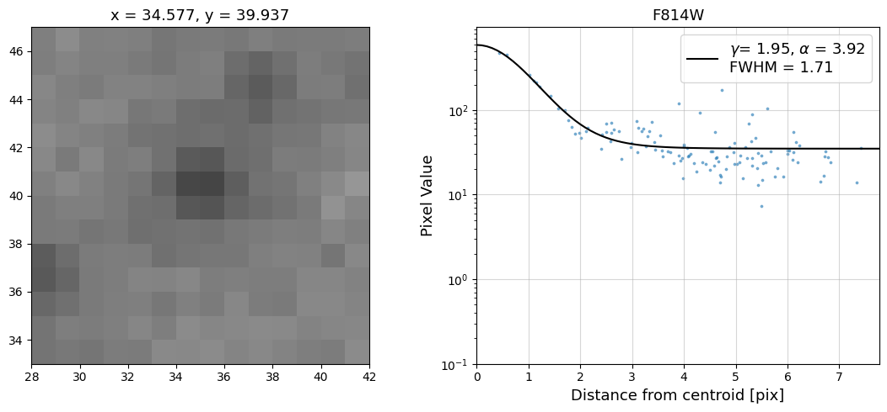
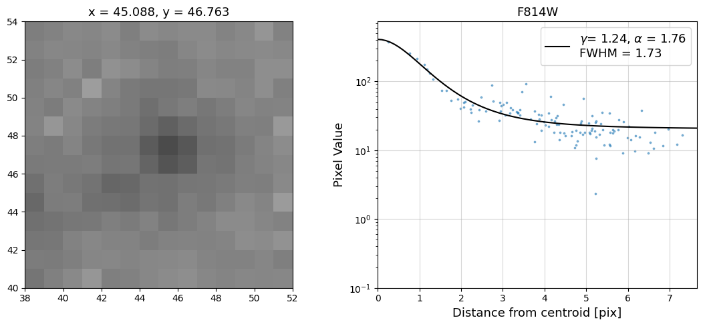
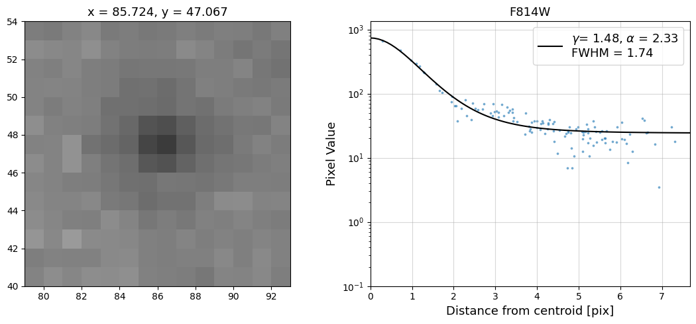
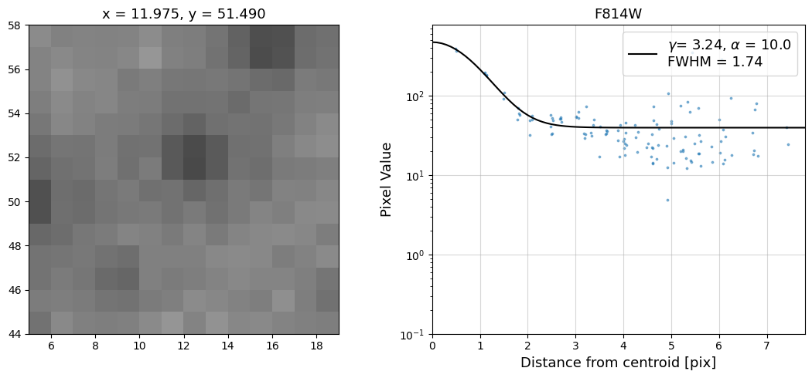
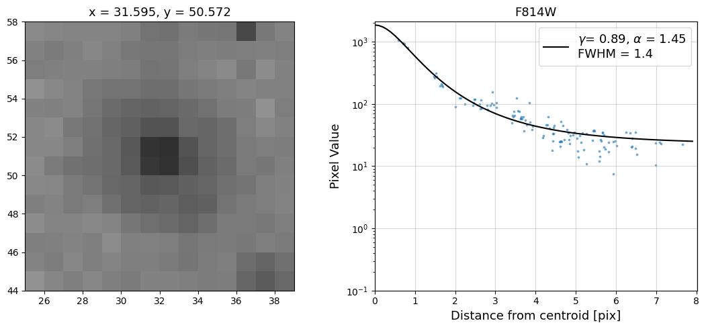
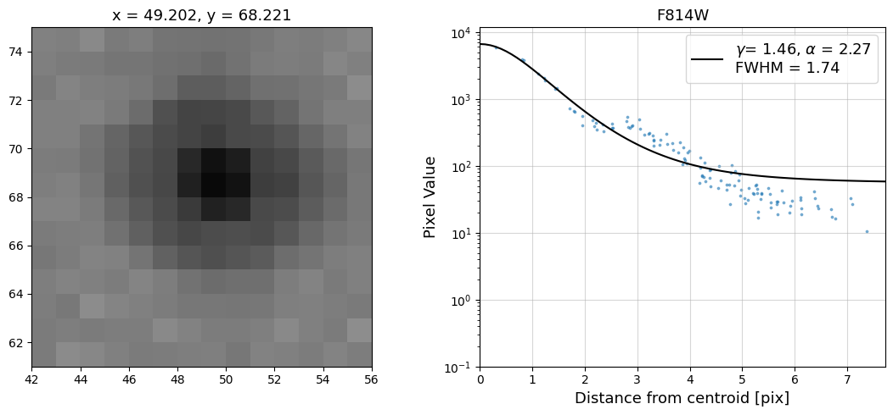
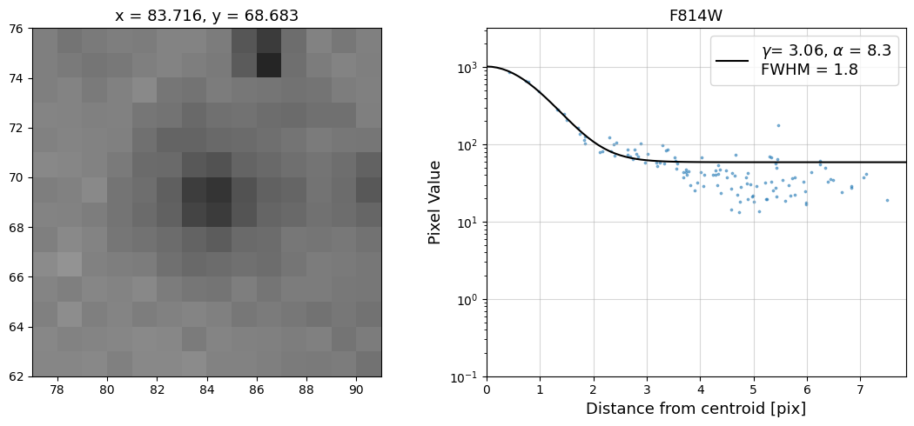
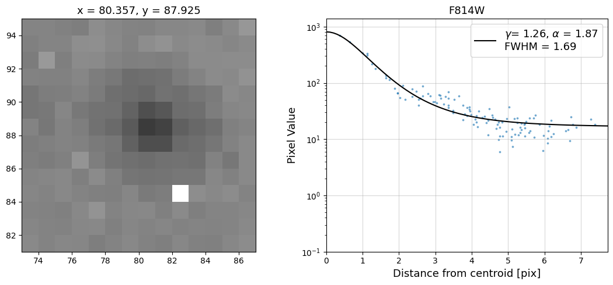
Radial Profile Plot Note: The scatter points that trend above the fitted line between pixel distances ~2-4, and
then below the fitted line between ~4-7 pixels are due to the Airy rings surrounding the PSF.
7. Should I submit a HOPR or Help Desk Ticket?#
If your data from the exception report are affected by a problem, as in the example above, please file a HOPR
and begin the process of requesting a repeat observation. If you are still unsure whether or not your data are
affected by an issue after displaying it, checking the header keywords in the observing logs, plotting the jitter
data, a quick-look determination of the S/N, and checking any PSFs for signs of drift, please reach out to the
WFC3 Help Desk. Lastly, please do not forget that there is a 90-day time limit from the date that the data
were delivered to file a HOPR.
8. Conclusions#
Thank you for going through this notebook. You should now have all the necessary tools for accessing the
data from your exception report. After completing this notebook you should be more familiar with:
Downloading your data.
Displaying your data.
Viewing the
_jif.fitsfile header.Plotting data from the
_jit.fitsfile.Determining if a HOPR should be filed.
Congratulations, you have completed the notebook.
Additional Resources #
Below are some additional resources that may be helpful. Please feel free to contact the WFC3 Helpdesk
with any questions.
About this Notebook #
Author: Benjamin Kuhn, WFC3 Instrument
Updated On: November 21, 2023
Citations #
If you use Python packages for published research, please cite the authors. Follow these links for more
information about citing packages such as astropy, astroquery, matplotlib, photutils, etc.:
Top of Page